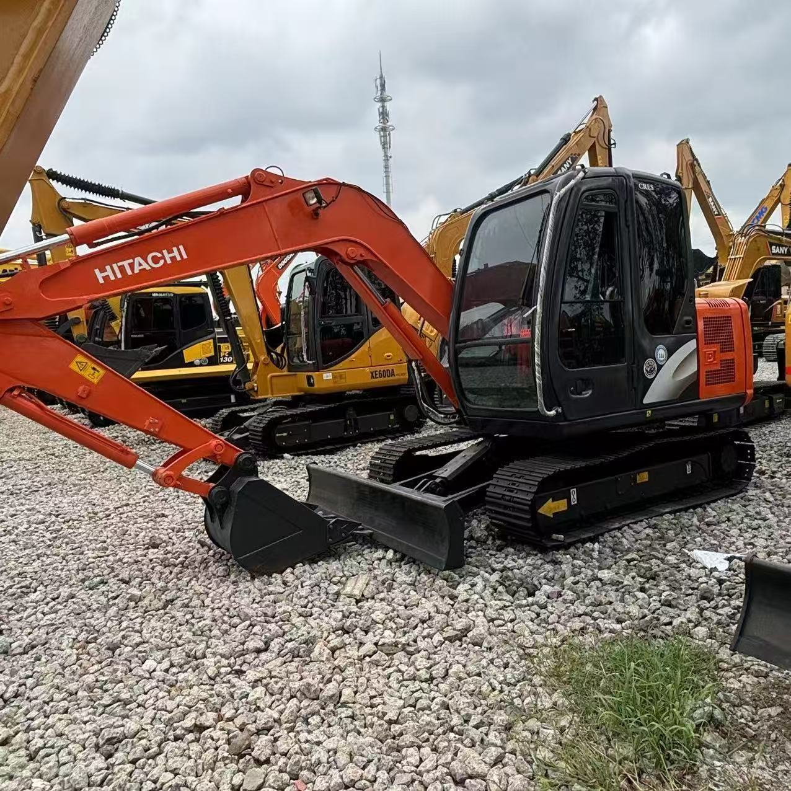

Refurbished Hitachi Zaxis 60 Excavator
The Hitachi Zaxis 60 Excavator is a highly efficient and versatile compact machine, ideal for small to medium-scale construction, landscaping, and material handling tasks. Known for its exceptional fuel efficiency, smooth operation, and reliable hydraulic performance, the Zaxis 60 is designed to deliver high productivity in tight or confined spaces where larger machines would struggle to operate. A refurbished Zaxis 60 provides the same performance and reliability as a new machine but at a significantly lower price, making it an excellent investment for businesses and contractors looking to maximize their budget.
Honestly, it's almost impossible to buy a brand new excavator from China. They either don't exist or are made in China. If a Chinese seller tells you their Caterpillar/Komatsu/Volvo/Kobelco/Hitachi is brand new, they're lying. Therefore, a refurbished excavator is your best bet.

Here are the detailed specifications for a refurbished Hitachi Zaxis 60 excavator (ZX60 or ZX60USB-5N):
Operating Weight and Dimensions
- Operating Weight:
- ZX60: ~6,090–6,540 kg (13,426–14,418 lbs)
- ZX60USB-5N: ~5,200–5,400 kg (compact tail swing variant)
- Transport Length: ~6.12 meters
- Transport Width: ~2.31 meters
- Transport Height: ~2.59 meters
- Tail Swing Radius: ~1.6–1.8 meters
- Track Width: ~450 mm standard
- Undercarriage: Compact or long carriage depending on variant
Engine and Powertrain
- Engine Model: Isuzu AR-4JJ1X or BB-4BG1T (Tier 2 or Tier 3 compliant)
- Rated Power Output: ~39.6–54.3 kW (53.8–72.8 hp) @ 2,000–2,200 rpm
- Fuel Tank Capacity: ~135–150 liters
- Travel Speed:
- Low: ~4.5 km/h
- High: ~5.5 km/h
- Swing Speed: ~10–11 rpm
- Drive Type: Hydrostatic with planetary final drives
Hydraulic System
- Main Pump Type: Load-sensing axial piston pumps
- Flow Rate: ~2 × 100–120 L/min
- System Pressure: Up to 28 MPa
- Hydraulic Oil Capacity: ~100–120 liters
- Efficiency Features:
- Boom/swing priority
- Regeneration circuits
- Auto hydraulic warm-up
- ECO mode and auto idle system
Performance Metrics
- Bucket Capacity: ~0.28 m³ (0.37 yd³) standard
- Max Digging Depth: ~3.77–5.84 meters (12 ft 4 in to 19 ft 2 in)
- Max Reach (Horizontal): ~6.23–8.95 meters (20 ft 5 in to 29 ft 4 in)
- Max Dump Height: ~4.5–4.8 meters
- Bucket Digging Force: ~55–60 kN
- Arm Digging Force: ~40–45 kN
Cab and Operator Features
- Cab Type: ROPS-certified enclosed cab
- Display: LCD monitor with diagnostics and ECO gauge
- Controls: Pilot-operated joysticks with auxiliary hydraulic circuit
- Comfort: Adjustable seat, optional HVAC
- Visibility: Wide glass area, LED work lights
Attachments Compatibility
- Standard Bucket: ~0.28 m³
- Optional Tools: Hydraulic breaker, auger, compactor, ripper
- Quick Coupler: Manual or hydraulic options available
- Blade Options:
- Standard dozer blade for grading and stability
- Blade float and angle blade options for enhanced backfilling
Refurbishment Scope
Refurbished ZX60 units typically include:
- Engine Overhaul: Turbocharger, injectors, cooling system
- Hydraulic Restoration: Pump recalibration, valve block testing, hose replacement
- Electrical Diagnostics: Monitor, sensors, wiring harness
- Cab Reconditioning: Seat, joysticks, HVAC, repainting
- Structural Repairs: Boom/bucket welding, bushing replacement, undercarriage rebuild
Overview of the Hitachi Zaxis 60 Excavator
The Hitachi Zaxis 60 is a compact, tracked hydraulic excavator designed for a wide range of light to medium-duty applications. Its relatively small footprint allows it to operate efficiently in urban environments or on jobsites where space is limited. Despite its size, the Zaxis 60 is capable of handling demanding tasks such as digging, lifting, grading, and material transport with ease.
When refurbished, the Zaxis 60 undergoes a comprehensive inspection and reconditioning process. Worn-out parts are replaced with genuine Hitachi components, ensuring that the machine operates just like a new unit. This refurbishment provides businesses with a cost-effective solution to acquire a high-performance machine without breaking the bank.
Key Specifications of the Hitachi Zaxis 60 Excavator
The Zaxis 60 offers a perfect balance of power, size, and efficiency, making it ideal for various applications. Here are the key specifications:
-
Operating Weight: Approximately 5,800 - 6,500 kg (12,786 - 14,330 lbs)
-
Engine Power: 50 hp (37 kW)
-
Max Digging Depth: Up to 4.3 meters (14.1 feet)
-
Maximum Reach: 6.5 meters (21.3 feet)
-
Bucket Capacity: Typically 0.3 - 0.4 cubic meters (10.5 - 14.1 cubic feet)
-
Fuel Tank Capacity: Around 80 - 100 liters (21 - 26 gallons)
-
Travel Speed: Up to 5.5 km/h (3.4 mph)
These specifications provide the Zaxis 60 with the versatility to perform tasks efficiently, while its smaller size allows for better maneuverability in restricted spaces. This makes it particularly effective on urban construction sites, residential projects, and landscaping applications.
Performance and Efficiency of the Zaxis 60
The Zaxis 60 is designed to provide maximum efficiency and performance while minimizing fuel consumption. Its powerful engine, combined with a high-efficiency hydraulic system, ensures smooth operation and fast cycle times, improving productivity and reducing operational costs.
Performance Highlights:
-
Efficient Hydraulics: The Zaxis 60 is equipped with a highly efficient hydraulic system that allows for precise control over the boom, arm, and bucket. This provides smoother operation, faster cycle times, and improved productivity when performing tasks such as digging, grading, or material handling.
-
Fuel Efficiency: One of the standout features of the Zaxis 60 is its fuel-efficient engine. Designed to reduce fuel consumption without sacrificing power, the Zaxis 60 helps businesses reduce operating costs while maintaining high performance.
-
Compact yet Powerful: Despite its small size, the Zaxis 60 provides impressive digging depth and reach. This allows it to perform a wide range of tasks, such as trenching, grading, and material handling, with ease.
-
Responsive Operator Control: The Zaxis 60 features responsive, easy-to-use controls that allow operators to perform precise tasks with accuracy. The smooth operation and ergonomic controls reduce operator fatigue and enhance overall job efficiency.
Durability and Longevity of the Zaxis 60
Hitachi is well-known for its durable equipment, and the Zaxis 60 is no exception. Designed for long-term performance, the Zaxis 60 is built to withstand tough working conditions and provide many years of reliable service.
Durability Features:
-
Robust Undercarriage: The undercarriage of the Zaxis 60 is built to withstand the wear and tear of rough terrain and heavy usage. The tracks, rollers, and sprockets are designed for extended service life, ensuring the machine operates smoothly even on uneven ground.
-
Engine Longevity: Powered by a reliable engine, the Zaxis 60 can deliver thousands of hours of service with proper maintenance. This makes it a long-term investment for businesses looking for dependable equipment that will provide reliable performance over many years.
-
Reliable Hydraulic System: The hydraulic system of the Zaxis 60 is engineered to handle high pressures, ensuring that it can perform demanding tasks without fail. The system is designed for durability, minimizing downtime and extending the life of the machine.
Comfort and Safety of the Zaxis 60
The comfort and safety of the operator are crucial aspects of the Zaxis 60’s design. The machine features an ergonomic cabin that offers a comfortable working environment, reducing operator fatigue during long shifts.
Comfort and Safety Features:
-
Ergonomic Cabin: The cabin of the Zaxis 60 is spacious and designed to enhance operator comfort. The adjustable seat and user-friendly controls make it easy to operate, even during extended work hours. The cabin also offers excellent visibility, allowing operators to work more efficiently and safely.
-
Noise and Vibration Reduction: The cabin is designed to minimize noise and vibration, creating a quieter and more comfortable environment for the operator. This feature is particularly helpful for reducing operator fatigue during long working hours.
-
Safety Features: The Zaxis 60 is equipped with Roll Over Protection (ROPS) and Falling Object Protection (FOPS), ensuring the operator is safe in hazardous work environments. The machine’s low center of gravity provides stability, which is particularly beneficial when working on uneven or sloped terrain.
Versatility and Attachments for the Zaxis 60
The Hitachi Zaxis 60 is highly versatile and can be fitted with various attachments to handle different tasks. Whether you need to dig, grade, or lift materials, the Zaxis 60 can be customized to meet the specific demands of the job.
Common Attachments for the Zaxis 60:
-
Buckets: The Zaxis 60 can be equipped with a range of bucket types, including general-purpose, heavy-duty, or grading buckets. These typically range from 0.3 to 0.4 cubic meters (10.5 - 14.1 cubic feet), making them ideal for excavation, grading, and material handling.
-
Hydraulic Breakers: For demolition and material removal, the Zaxis 60 can be equipped with a hydraulic breaker, which can easily break through concrete, rock, and other hard materials.
-
Augers: Auger attachments are perfect for drilling deep, narrow holes for foundations, posts, or other applications that require precise hole placement.
-
Grapples: The Zaxis 60 can be fitted with grapple attachments for lifting and handling materials such as logs, scrap metal, and debris.
-
Quick Couplers: Quick couplers allow operators to easily switch between different attachments without needing to leave the cabin. This minimizes downtime and improves overall efficiency on the job site.
Benefits of Purchasing a Refurbished Hitachi Zaxis 60 Excavator
Buying a refurbished Zaxis 60 offers several advantages over purchasing a new unit, particularly for businesses that are budget-conscious but still want a high-quality machine.
Key Benefits:
-
Cost Savings: Refurbished Zaxis 60 units are considerably more affordable than new models, allowing businesses to obtain a high-performance machine at a fraction of the cost. Refurbishing the machine restores it to near-new condition, ensuring reliable performance without the new unit price tag.
-
Thorough Reconditioning: Each refurbished Zaxis 60 undergoes a thorough inspection and reconditioning process, where all worn components are replaced with genuine Hitachi parts. This ensures that the machine is as reliable as a new unit.
-
Warranty: Many refurbished Zaxis 60 machines come with a warranty, providing peace of mind to buyers in case any issues arise. The warranty ensures that the machine will continue to perform well after the purchase.
-
Sustainability: Purchasing refurbished equipment is an environmentally friendly option, as it reduces waste and helps extend the life of existing machinery. This contributes to sustainability in the heavy equipment industry.
Maintenance Tips for the Hitachi Zaxis 60 Excavator
To ensure that the Zaxis 60 continues to perform at its best, regular maintenance is essential. Below are some key maintenance tips:
Maintenance Recommendations:
-
Engine Maintenance: Regularly check and change the engine oil, replace air filters, and monitor coolant levels to maintain engine performance and prevent overheating.
-
Hydraulic System: Inspect hydraulic hoses for leaks and replace hydraulic filters as needed. Keeping the hydraulic system clean and functioning optimally ensures smooth operation.
-
Undercarriage: Regularly inspect the undercarriage, including tracks, sprockets, and rollers, for wear. Timely replacement of worn parts helps avoid further damage and ensures the machine continues to operate smoothly.
-
Attachments: Check attachments such as buckets and grapples for wear and tear. Replace or repair damaged parts to keep attachments functioning efficiently.
Conclusion
The Hitachi Zaxis 60 Excavator is a compact yet powerful machine that offers excellent performance, fuel efficiency, and versatility for a variety of applications. Purchasing a refurbished Zaxis 60 provides an affordable way to obtain a high-quality machine that performs just like new. With the right maintenance, the Zaxis 60 can continue to serve operators for many years, making it a valuable investment for any construction, landscaping, or material handling business.
Our Commitment
- 2 years / 4000 hours warranty.
- EPA certified.
- No sweatshop labor.
Contacts

- [email protected]
- Youtube Instagram Facebook
- Navigation: G206 (Sishu Bridge) in Changfeng County, Hefei City, Anhui Province, 200 meters north to the east